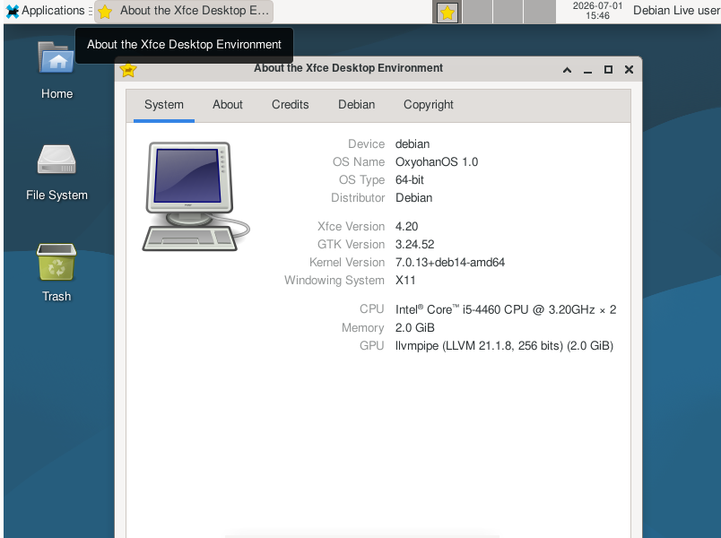

Foi a primeira build do OxyohanOS compillada em 01/07/2026. Foi apenas uma build de teste para testar o live build e alterou apenas o os-release
Essa build teste já vem com o Firefox, Gimp, VLC e o XFCE como desktop padrão e já vem com o tema padrão
Existe vídeo no canal do JohnzinOmochain que detalha a criação dessa primeira build e o link tá aí